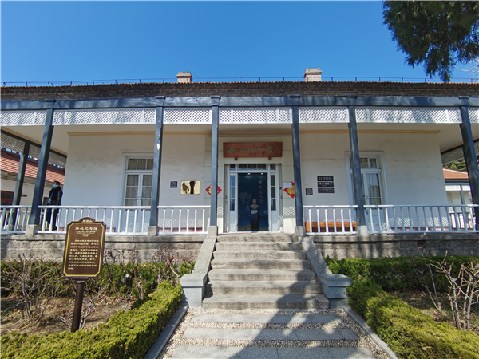
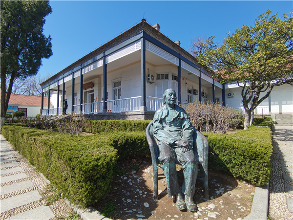
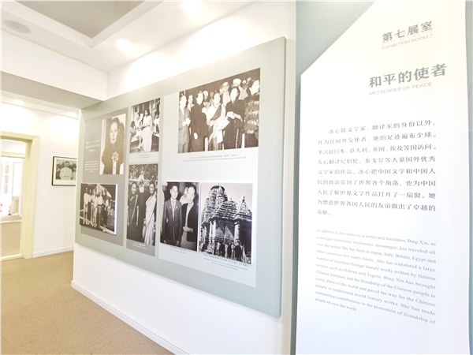

冰心纪念馆正门

冰心纪念馆

冰心纪念馆内部布展一角
冰心纪念馆位于山东省烟台市烟台山景区内。全国重点文保单位、全国爱国主义教育示范基地。1903年，冰心先生随来烟台创办海军学堂的父亲谢宝璋前来芝罘湾畔居住生活，在烟台山一带度过了八年童年时光。纪念馆用房为建于1863年的东海关总监察长官邸旧址，是典型的英国亚洲殖民地外廊式建筑，总建筑面积514平方米。2008年8月3日正式对外开放。纪念馆共分五个部分9个展室，集中展示“冰心与烟台”的珍贵历史照片80余幅、文物20余件、书籍期刊66件、报纸5份、文献（复制品）11件、沙盘模型3个、汉白玉雕像1件、铜雕1件。纪念馆现由烟台蓝天文旅管理有限公司景区管理分公司负责日常管理和修缮，免费开放，配有专门讲解员。同时，纪念馆附近还有叶圣陶、赵朴初、郑振铎等民进先辈的印迹多处。